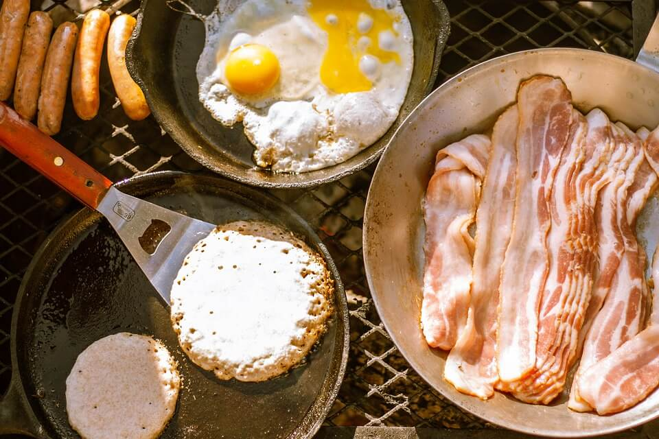

Who We Are
We are a community of fun loving, camping enthusiasts with a passion to share our
camping
experiences with one another.
Proudly established in Munster, Ireland, Camper Hacks was created in 2021 by a small group of camping
enthusiast buddies with a view to broaden the camping community in Ireland.
We share 'Camper Hacks' as the name suggests, are the proud producers of our comprehensive newsletter
"Camper Hacks" and
organise monthly meet-ups for like minded people who want to join our community.
Camper Hacks - Clothing

- Our top hack when camping is to pack light, breathable clothes that can easily be dried overnight. We recommend brands like Quechua (Decathlon), Columbia and Musto for gear.
- A light-weight rain jacket will keep you dry without weighing you down. It rains a lot in Ireland! You want water-proof materials, not water resistant if you're planning a long hike!
- Ensure you have enough socks! (And then add in three extra pairs.) Keep a fresh pair for each night also.
- Bring a fleece lined hat for the cold mornings. This can go under a peak cap to help block out the sun.
- Ankle-height hiking boots will be your best friend. These support the ankle should you stumble on a rock or twig alone the way.
Camper Hacks - Gear
- First up, wet hiking boots can ruin a great day's hiking. Not alone can this cause athletes foot, blisters and some stinky feet; it's also an all-round unpleasant experience! Hack this by removing your insoles at the end of the day and stuffing your wet shoes with dry, dirty clothes. Moisture will be drawn to the dry clothes and you'll have nice dry boots for tomorrow's hike!
- You know those pesky bread tags? The ones that keep your Brennans bread nice and fresh? These plastic guys make very handy, almost indestrucible clothes pegs. Use them to clip up your clothing to your clothes line and dry off your clothes.
- Imagine the scene: you wake up on a cold, crispy Irish morning. You climb out of your sleeping bag and step straight into a warm set of new clothes to start your days hiking. Sound heavenly? Putting the clothes you’re planning to wear the next day into the bottom of your sleeping bag with you before you go to bed is up there with our favourite clothing hack.
- We’re fully committed to reducing waste and recycling where possible. Plastic bags are great for patching holes in your tent, wearing over your shoes in a "I can't believe my wellies are in the car" emergency and for waterproofing your belongings if the weather turns....well, Irish!
- If out for a day on the water - attach a cork from a bottle of wine to your keys. That way, if your keys fall in, you don't have to be worried about that sinking feeling in your chest as you watch your car keys or motorhome keys sink too!
Camper Hacks - Food
- Check out our community members food hacks below:
- Thanks to our friends at Harvesting Nature for this amazing podcast. Check out their top hacks for open fire cooking and what type of stove to use.
- Our pals Megan and Michael at Fresh Off The Grid have 27 easy camping meals for us all to explore. If you try any of these out, tag us and the guys on socials! We would love to see your efforts!
- Thanks to our community member Vivienne S for sending in her favourite food hack via Twitter:
- "Use drinking straws to make handy spice holders. Seal the end by heating with a lighter. You then have compact spices for cooking on the go!"
- @ViversS
- The winners of our "Camper-Hacks-Cook-Off" this month were Tony G. and Majella Mc.N. Thanks guys for sending in your picture of this drool-worthy pancakes and brekkie spread, shot in Kilkee, Co.Clare last month. Recpies for these pancakes are going out in the September Newsletter. Make sure to click here to Sign Up!
- Details of next month's cooking challenge coming your way as usual in our newsletter.
- 